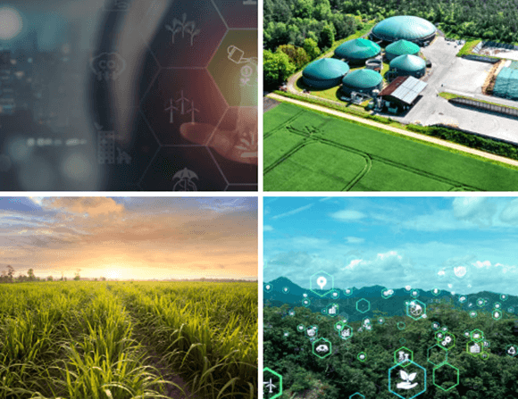
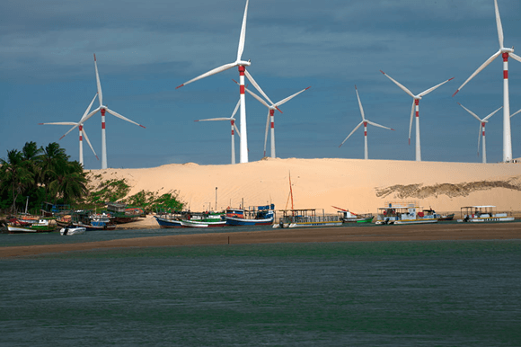
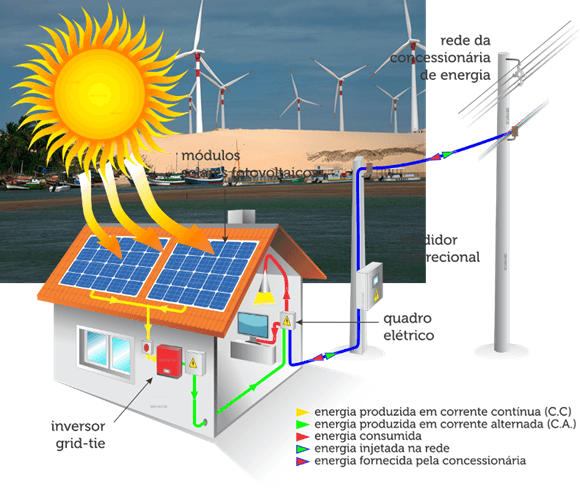
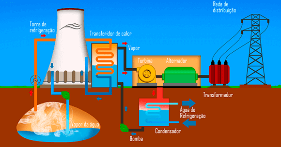
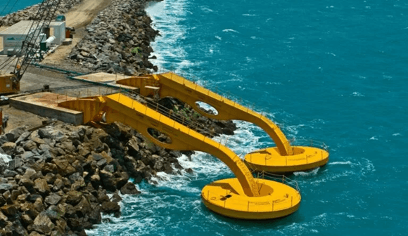

Objetivo: Identificar alternativas energéticas renováveis para uso no mundo atual.
Digite seu nome
Introdução
Na aula anterior, vimos que as fontes de energia renováveis são aquelas que se regeneram naturalmente em um curto período de tempo e, por isso, são consideradas mais sustentáveis. Diferentemente das fontes fósseis (como petróleo e carvão), que liberam grandes quantidades de dióxido de carbono (CO₂) na atmosfera, as energias renováveis têm um impacto ambiental significativamente menor.
Na aula de hoje, vamos estudar a preocupação com as mudanças climáticas e a segurança energética, e como o uso de fontes renováveis está em ascensão. Vamos explorar as principais alternativas desse tipo de energia.
Questões para serem respondidas no caderno sobre o tema da aula de hoje:
1. O que é biomassa e quais são suas principais formas de aproveitamento?
2. Quais são as vantagens do uso da biomassa como fonte de energia?
3. Como funciona a geração de energia eólica e quais são seus principais desafios?
4. Dê um exemplo prático do uso da energia eólica no Brasil e explique por que essa região é ideal para essa fonte de energia.
5. Explique como a energia solar é aproveitada por meio de painéis fotovoltaicos e sistemas solares térmicos.
6. Quais são as principais vantagens e desafios da energia solar?
7. O que é energia geotérmica e quais são seus principais benefícios e limitações?
8. Como a energia maremotriz é gerada e quais são os desafios associados a essa fonte de energia?
9. O que é eletricidade verde e como a integração de fontes renováveis está sendo otimizada atualmente?
10. Qual é o impacto das fontes renováveis na diversificação da matriz energética do Brasil? Cite exemplos.
1. Biomassa: Energia Renovável a Partir da Matéria Orgânica

A biomassa é uma fonte de energia renovável obtida a partir de matéria orgânica, incluindo resíduos agrícolas, restos florestais, dejetos de animais e até resíduos urbanos, como lixo orgânico. Essa fonte de energia tem se destacado por seu potencial de reaproveitamento de materiais que, de outra forma, seriam descartados, contribuindo para a redução de resíduos e o aproveitamento de recursos naturais.
Como a Biomassa Funciona? A energia da biomassa pode ser aproveitada de diversas formas:
- Combustão Direta: A biomassa é queimada para produzir calor, que pode ser usado diretamente em processos industriais ou para gerar vapor que aciona turbinas e produz eletricidade.
- Conversão em Biocombustíveis: Etanol (da fermentação de cana-de-açúcar ou milho) e biodiesel (de óleos vegetais ou gorduras animais) são usados em motores de combustão.
- Produção de Biogás: Por meio da decomposição anaeróbica de resíduos orgânicos, gerando gás metano que pode ser usado para eletricidade ou como combustível veicular.
Exemplo Prático no Brasil: O Brasil se destaca na produção de etanol a partir da cana-de-açúcar. O bagaço restante é utilizado para gerar eletricidade. Além disso, o biogás captado em aterros sanitários é convertido em energia, reduzindo gases de efeito estufa.
Vantagens: Aproveitamento de resíduos, redução de emissões, versatilidade no uso, e estímulo à economia local.
Desafios: Impactos ambientais devido à obtenção insustentável, competição com a produção de alimentos, e poluição local causada pela queima.
2. Energia Eólica: Aproveitando a Força do Vento

A energia eólica é uma das fontes renováveis mais limpas e promissoras para geração de eletricidade no mundo. Utilizando a força do vento, ela transforma a energia cinética do ar em energia elétrica por meio de turbinas eólicas, também chamadas de aerogeradores.
Como Funciona? O processo de geração de energia eólica é relativamente simples, mas altamente eficiente:
- Movimento das Pás: O vento move as pás das turbinas, projetadas para captar o máximo de energia do ar em movimento.
- Conversão de Energia: As pás conectadas a um rotor acionam um gerador que converte a energia mecânica em energia elétrica.
- Distribuição: A eletricidade gerada é enviada para subestações e distribuída para a rede elétrica.
Exemplo Prático no Brasil: O Brasil é líder na produção de energia eólica, com destaque para estados como Rio Grande do Norte, Bahia e Ceará. Um exemplo notável é o Parque Eólico de Lagoa do Mato, que fornece energia para milhares de residências.
A energia eólica representa cerca de 12% da matriz elétrica brasileira, com grande potencial de expansão devido às condições favoráveis de vento no país.
Vantagens: Sustentabilidade, fonte renovável e inesgotável, criação de empregos, geração de renda para proprietários de terras, e diversificação energética.
Desafios: Dependência de ventos regulares, impacto na fauna, poluição visual e sonora, e altos custos iniciais de instalação.
3. Energia Solar: A Força do Sol ao Nosso Alcance

A energia solar é uma das fontes de energia renovável mais promissoras, especialmente em países tropicais como o Brasil, onde a radiação solar é abundante durante todo o ano. Essa fonte de energia é obtida diretamente do sol, utilizando tecnologias que convertem a luz e o calor em eletricidade ou outras formas de energia útil.
Como Funciona?
- Painéis Fotovoltaicos: Contêm células fotovoltaicas feitas de materiais semicondutores, como o silício. A luz solar gera um fluxo de elétrons, produzindo eletricidade, que pode ser usada, armazenada ou enviada para a rede elétrica.
- Sistemas Solares Térmicos: Utilizam coletores solares para captar o calor do sol, aquecendo água ou fluidos específicos para uso residencial ou industrial.
Exemplo Prático no Brasil: A energia solar cresce rapidamente no país. Minas Gerais e São Paulo se destacam pela instalação de painéis em residências e empresas. O Complexo Solar Pirapora, em Minas Gerais, é um dos maiores parques solares da América Latina, fornecendo energia limpa para milhares de residências. Programas públicos incentivam a adoção de sistemas solares em áreas remotas.
Vantagens: Fonte renovável e infinita, sustentabilidade ambiental, independência energética, economia a longo prazo, e acessibilidade em áreas isoladas.
Desafios: Alto custo inicial, dependência do clima, necessidade de grandes áreas, e descarte de materiais requerendo políticas de reciclagem adequadas.
4. Energia Geotérmica

A energia geotérmica utiliza o calor proveniente do interior da Terra para geração de energia e aquecimento.
Como Funciona? O calor subterrâneo aquece a água, gerando vapor que movimenta turbinas e produz eletricidade.
Exemplo Prático: A Islândia é um dos maiores exemplos de uso da energia geotérmica, empregando-a para aquecer residências e gerar eletricidade.
Vantagens: Fonte constante e independente do clima.
Desafios: Necessita de locais específicos com significativa atividade geotérmica, como regiões vulcânicas.
5. Energia Maremotriz

A energia maremotriz é obtida pelo movimento das marés e ondas do mar, utilizando o fluxo natural da água para gerar energia.
Como Funciona? Turbinas submersas ou dispositivos flutuantes captam a força da água em movimento, transformando-a em eletricidade.
Exemplo Prático: Projetos-piloto no Reino Unido e França mostram o potencial da energia maremotriz como fonte de energia limpa.
Vantagens: Fonte previsível devido aos ciclos regulares das marés.
Desafios: Tecnologia ainda em desenvolvimento e possível impacto nos ecossistemas marinhos.
6. Eletricidade Verde e Integração das Fontes
O conceito de eletricidade verde integra diferentes fontes renováveis em redes inteligentes, otimizando sua utilização de forma sustentável.
Exemplo Prático: Sistemas avançados de armazenamento, como baterias, permitem o uso da energia solar captada durante o dia para abastecer a demanda à noite.
Benefícios: A integração melhora a eficiência e torna o fornecimento de energia mais confiável, reduzindo a dependência de fontes fósseis.
Não existe pergunta boba! A Ciência é feita de perguntas!
P:Por que as fontes renováveis, como a solar e a eólica, são consideradas sustentáveis em comparação às fontes não renováveis?
R: Elas são consideradas sustentáveis porque utilizam recursos naturais que se renovam continuamente, como o sol e o vento, e não produzem resíduos poluentes significativos. Além disso, essas fontes não contribuem diretamente para o aquecimento global, ao contrário dos combustíveis fósseis.
P:Quais são os maiores desafios para o uso em larga escala da energia geotérmica no Brasil?
R: O principal desafio é a localização de áreas com potencial geotérmico significativo, já que essa fonte depende de atividade vulcânica ou termal. No Brasil, essas áreas são limitadas, o que dificulta a expansão dessa tecnologia.
P:Como as tecnologias atuais ajudam a integrar diferentes fontes de energias renováveis na matriz elétrica?
R: Tecnologias como redes inteligentes (smart grids) e sistemas avançados de armazenamento, como baterias de longa duração, permitem equilibrar a intermitência de fontes como solar e eólica, otimizando o uso e distribuição da energia gerada.